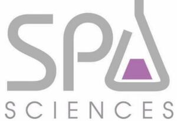

Trade Mark Journal No.2025/034 22 August 2025
WO0000001868601 (3,8,10,11,21)
Office of origin: United States of America
Date of International Registration:14 April 2025
Date of designation in the UK:
14 April 2025

The mark consists of grey words "Spa Sciences" with the "A" in "Spa" shaped like a beaker, with purple formation in bottom of beaker figure.
The mark contains the colours grey and purple.
Grey words "Spa Sciences" with the "A" in "Spa" shaped like a beaker, with purple formation in bottom of beaker figure.
International priority date claimed: 12 February 2025
(United States of America)
(99039017)
- Class 3
- Bath foams; bath salts; bath soaps; body splash; cosmetic preparations for bath and shower; exfoliants for skin, body and facial scrubs and beauty masks; foam bath; foam cleansers for personal use; hair care preparations; hair cleaning preparations; hair conditioners; hair gel and hair mousse; hair gels; hair sprays; hair sprays and hair gels; hair styling gel; hair styling preparations; lotions for skin moisturizing, skin cream, eye cream, beauty masks; moisturizing preparations for the skin; moisturizing solutions for the skin; non-medicated preparations all for the care of skin, hair and scalp; non-medicated skin care creams and lotions; non-medicated skin care preparation, namely, body mist; non-medicated skin care preparations; non-medicated skin care preparations, namely, creams, lotions, gels, toners, cleaners and peels; non-medicated skin care preparations, namely, patches containing non-medicated skin care preparations for dry and aging skin, for hydrating and moisturizing the skin; non-medicated skin creams with essential oils for use in aromatherapy; non-medicated stimulating lotions for the skin; skin abrasive preparations; skin and body topical lotions, creams and oils for cosmetic use; skin cleansers; skin cleansing cream; skin cleansing lotion; skin creams; skin fresheners; skin lotions; skin masks; skin moisturizer; skin moisturizer masks; skin moisturizing gel; skin soap; skin toners; topical skin sprays for cosmetic purposes; wrinkle-minimizing cosmetic preparations for topical facial use; makeup remover; facial tonics; night creams; eye serum; facial serum; non-medicated acne preparations; non-medicated lip care preparations; facial mist; eucalyptus oil.
- Class 8
- Electric epilators; hair removal device; electric facial hair remover and trimmer; foot file; foot smoothing tool; wet/dry epilation device; rechargeable shaver.
- Class 10
- Brushes for cleaning body cavities; massage apparatus for neck and shoulders; electric massage apparatus for household use; electric massage appliances, namely, electric vibrating massager; electric massage therapy guns; massaging apparatus for personal use; microdermabrasion apparatus for medical or therapeutic purposes; microneedle dermal pens; electrically-powered apparatus for treating skin by applying low level light and sonic vibrations to the skin; electronic light therapy apparatus for the skin; scraping apparatus for gua sha therapy; ion-infusing, electromagnetic, hand-held device for skin care, namely, facial toning machines for cosmetic use; apparatus for cosmic thermal and cold therapy, namely, cold therapy wraps; massage apparatus, namely sonic face and body contouring ice and heat roller device; LED thermal infusion device for face and skincare; body contouring and cellulite massage device; rechargeable kneading massage pillow; rechargeable shiatsu wrap massager device; ultrasonic facial spatula; cosmetic apparatus for microdermabrasion for treating skin; nasal irrigation devices and products; heating pads and blankets, inhalers; consumer medical diagnostic equipment, namely blood pressure cuffs, pulse ox devices, and digital stethoscopes; electric and battery-powered therapeutic inhaler devices, namely, inhalers sold empty, using steam to provide relief from sinus, throat and upper respiratory conditions; sonic dermaplaning device; thermal and cold therapy device for eyes and lips; facial sculpting bar device; rechargeable sonic men's facial cleaning device.
- Class 11
- Electronic facial steamers; steam facial apparatus; facial humidifier; humidifiers.
- Class 21
- Make-up brushes; cosmetic brushes; cosmetic spatulas; electric face cleansing brushes; electric applicators for applying cosmetics to the skin; electrical applicators for applying cosmetics in the nature of non-medicated skin serums and creams to the skin; face and body mist sprayer device; rechargeable shower brush.
TLB Delaware, LLC
Representative: Jenna P. Torres Eckert Seamans Cherin & Mellott, LLC, 50 S. 16th Street, 22nd Floor, Philadelphia PA 19102-2516, UNITED STATES OF AMERICA